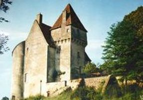
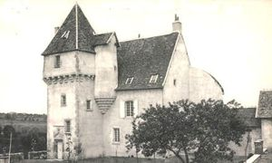
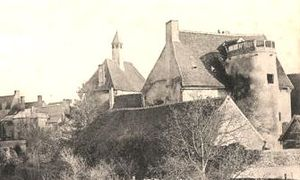
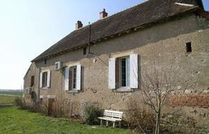

Recensement Jean-Claude Truffet
| Département | 03 — Allier |
| Canton | Cerilly |
| Commune | Ainay-le-Château |
| Type d'édifice | Maison forte |
| Période d'origine | XV |




CHANDON, en 1342, Philippe des Moulins, chevalier. En 1449, Philippe et Guillaume des Moulins sont seigneurs de Chandonet de Bois Farnoux. En 1500, le fief est aux mains de Pierre de la Roche, par son épouse de Beaupoirier, près du bourg du Breuil. En 1503, c'est Phelippe des Moulins qui est seigneur de Chandon. Il fait aveu, à la duchesse de Bourbon de sa maison de Chandon . En 1671 Claude Barbarin écuyer, lieutenant au régiment de Saint-Aubin, devient seigneur de Chandon puis à son fils René en 1676. en 1672 Charles Asse écuyers capitaine du régiment de Picardie, fait aveu de ce fief au sire de Theurault. En cette fin du XVIIe siècle, le fief est morcelé et les revenus de ses terres sont versés à l'hôpital de Moulins. De 1754 à 1798, le château est propriété de la famille Béraud qui vend Chandon à Louis Dominique Mazérat, juge de paix, lequel y meurt en 1841. PONTCHARREAU, en 1301, un aveu de Guy de Montgarnaud, chevalier, pour ce qu'il tenait en fief du seigneur de Bourbon. En 1350, Johanis Franz, fit aveu des terres de Pontcharraut. En 1396, c'est le seigneur d'Issertieux, Jehan de la Porte, qui fait aveu au duc de Bourbon de la motte de Pontcharrault. En 1410, Vézien de Blasson rendit hommage pour son hospicium avec motte. Quelques années plus tard, la seigneurie a encore changé de mains et Guillaume Grozieux rend hommage, en 1427, des hostels, manoir et demorance de Pontcharrault. Lui même ne reste pas très longtemps sur la terre et, dès 1444, c'est Pierre d''Orgère, écuyer, qui rend hommage de Pontcharraud pour sa femme. Au début du XVIe siècle, Jehan de la Halle, écuyer, est en 1503 devenu seigneur du domaine, probablement par mariage, puisqu'il fait alors aveu à la duchesse de Bourbon, avec damoiselle Françoise, de son hostel, maison forte. Par la suite, le château passa à diverses familles: les Villelume, les Biotière,et les de Rolland.
Chandon, sur une motte fossoyée, a gardé quelques aspects du passé avec ses tours, tourelles, hautes cheminées et sa toiture, le tout dominant un étang récemment remis en eau. Ce manoir des XIV-XVe siècles présente une tour carrée à fenêtres moulurées et des tours d'angle à toit tronqué, on remarque une porte à pinacles et une échauguette ornée d'un personnage couché. Au cours des siècles, Chandon a subi bien des vicissitudes, notamment lors des guerres de religions et a souffert du vandalisme de certains de ses propriétaires. Mais actuellement, le château est parfaitement restauré. Pontcharreau, La motte existe encore, dans l'étang qui, vidé en 1995, a livré un important matériel réparti de l'époque gallo-romaine a la période moderne. Du château reste, outre la chapelle, un donjon carré du XVIe siècle, l'ensemble des bâtiments est très remanié.
Famille de Pierre d'Orgère"
Château de Pontcharreau et Chandon à Ainay le Vieux